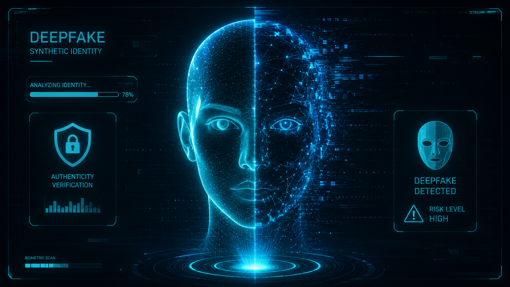

A Realidade sob Escrutínio
Deepfakes não são apenas vídeos falsos. São a fronteira final da desinformação, onde a Inteligência Artificial desafia nossa percepção do que é real.
O que são Deepfakes?
A tecnologia utiliza Redes Adversárias Generativas (GANs) para sobrepor rostos e clonar vozes com precisão assustadora.
Manipulação Estratégica
Diferente de edições comuns, a IA "aprende" as nuances de um indivíduo — microexpressões, tiques verbais e tons de voz — tornando a mentira orgânica e convincente para o olho humano destreinado.
Desinformação em Escala
A democratização de ferramentas de IA permite que conteúdos falsos sejam gerados em segundos, saturando as redes sociais.
Deepfakes de Áudio
Clone vocal usado em golpes de engenharia social, simulando familiares ou executivos em situações de emergência.
O Risco Político e Social
Vídeos forjados podem influenciar eleições, destruir reputações e causar pânico financeiro antes mesmo de serem desmentidos.
Ler estudo de caso arrow_forwardComo Identificar
A perfeição da IA ainda deixa rastros. Aprenda a observar as falhas nas costuras digitais.

Anomalias detectadas no contorno da mandíbula e reflexo pupilar inconsistente.
Bordas e Sombras
Procure por sombras que não acompanham o movimento do rosto ou borrões artificiais onde o cabelo encontra a testa.
Sincronia Labial
Observe se os sons das consoantes explosivas (P, B, M) coincidem exatamente com o fechamento dos lábios.
Inconsistência de Textura
A pele digital costuma ser excessivamente lisa ou "perfeita", perdendo poros, rugas naturais ou sardas reais.
Escudo Digital
Dicas práticas para não cair em armadilhas de deepfakes.
verified_user 1. Verifique a Fonte
Sempre busque o vídeo original em canais oficiais. Deepfakes circulam majoritariamente em aplicativos de mensagem sem contexto.
emergency_home 2. Palavra-Passe Familiar
Combine uma palavra de segurança secreta com sua família para validar emergências recebidas por áudio ou vídeo.
rule 3. A Regra do Movimento
A maioria das IAs falha em vídeos longos. Peça para a pessoa fazer um movimento lateral brusco com a cabeça durante uma chamada.
manage_search 4. Use Ferramentas de Detecção
Plataformas como Deepware Scanner e Microsoft Video Authenticator analisam vídeos suspeitos e apontam probabilidade de manipulação.
Nível de Alerta
Probabilidade de manipulação em conteúdos virais de fontes não verificadas.
Pronto para ver outras ameaças?
Clique no botão abaixo para conhecer outras ameaças que o ambiente digital pode apresentar